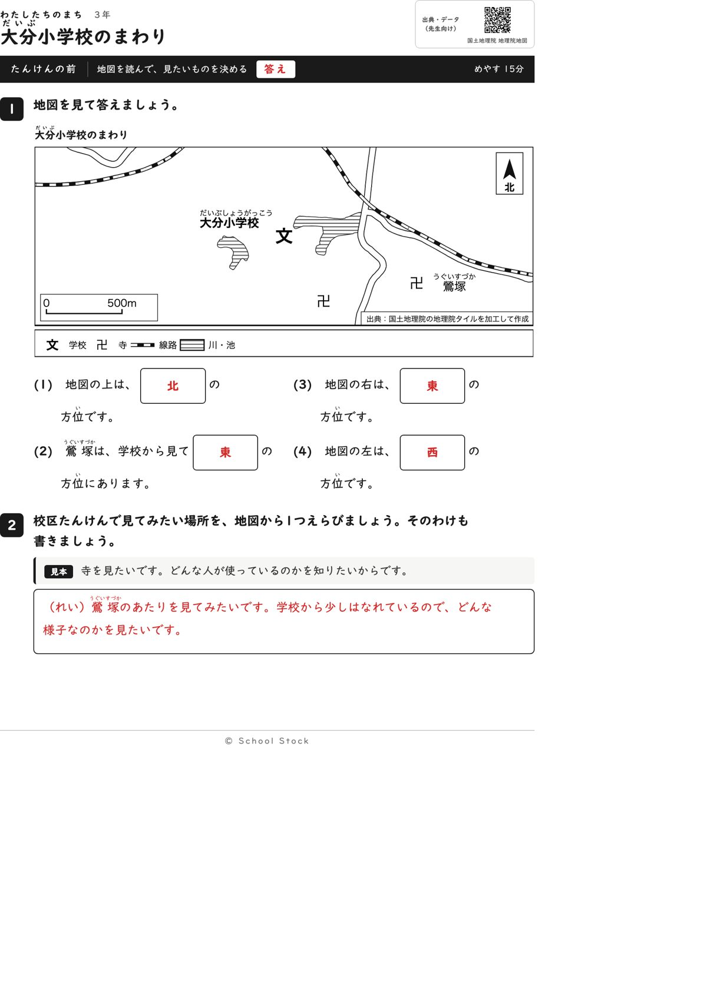
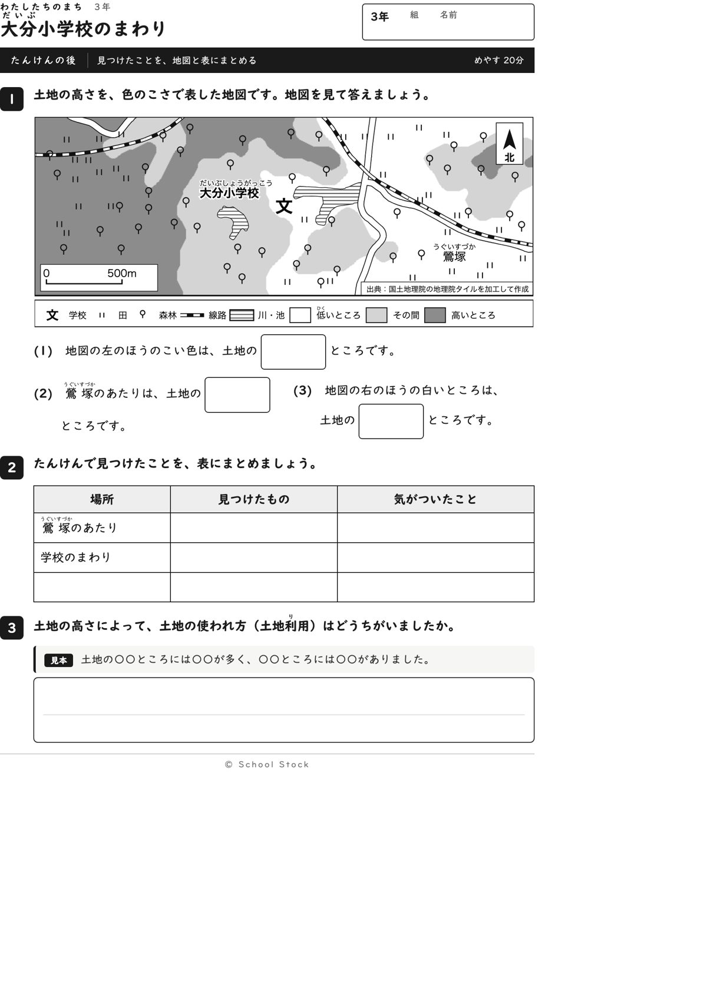
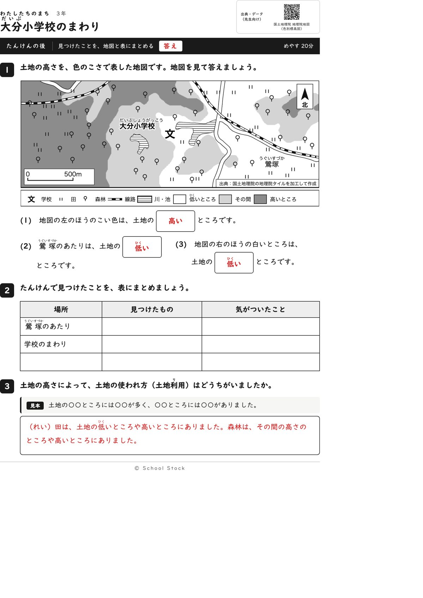
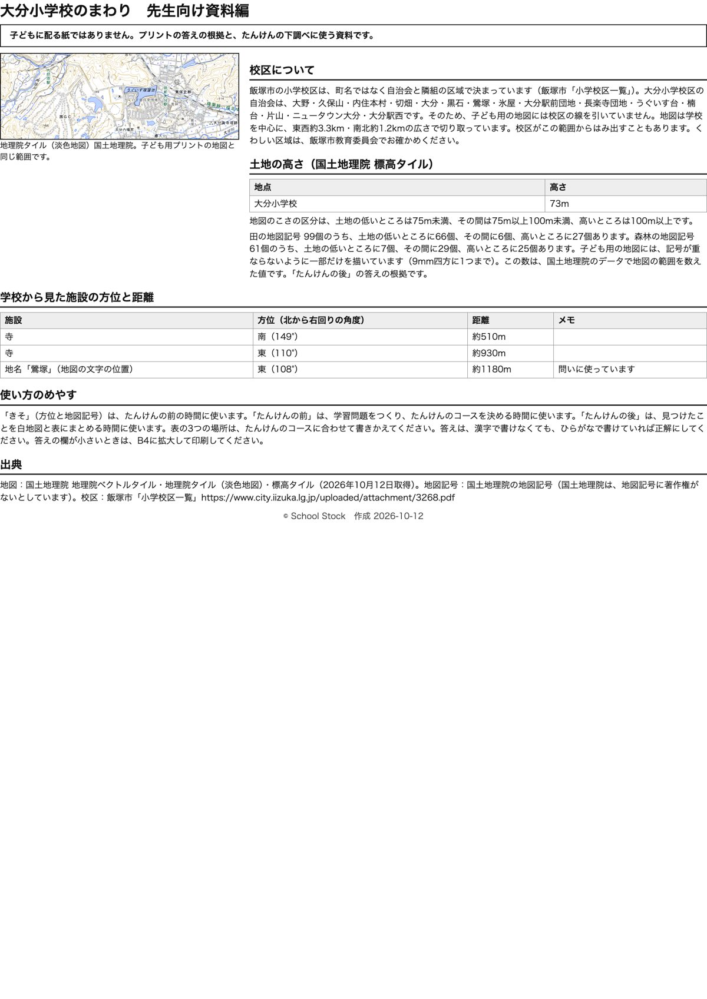

紙





直すところ
直すところはありません。
1回目のレビューで出た直し（3件・道具を直して作り直しました）
| 紙 | どこ | 何が困るか |
|---|---|---|
| たんけんの前 | 地図の下の凡例の「川」（たんけんの後の凡例も同じ） | 地図の斜線の形は池（うぐいす塚溜池など）で、川ではありません。凡例の言葉と実際が合いません。 |
| たんけんの後 | 問(3)の答えの欄（答えの面） | 赤字が「えらんだ田による」だけで、子どもが自分の答えを確かめられません。 |
| 資料編 | 学校から見た施設の方位と距離の表 | 前の問(2)に使っている鶯塚の行がなく、東の答えの根拠を先生が確かめられません。 |
2回目のレビューで出た直し（2件・道具を直して作り直しました）
| 紙 | どこ | 何が困るか |
|---|---|---|
| 資料編 | 「土地の高さ」の節の、田と森林の記号の数の文 | 資料編には田99個、森林61個と書いてありますが、地図に描いてある記号は目で数えると田は45個前後、森林は40個前後で、ずっと少ないです。地図は9mmの区画に1つしか描かず、地名などの場所も避けているためです。先生が数えると合わず、答えの根拠を疑われます。 |
| たんけんの後 | 問(3)「田の地図記号は、高いところと低いところの、どちらに多いか」 | 地図に描いてある田の記号を目で数えると、低いところが20個前後、高いところが14個前後で、差が小さいです。数える子によっては高いが多いと答えて、答えが割れます。 |
専門家団の声（いまの紙を見て）
香月八重筆頭・全学年
前は4問と見たい場所を書く問いで15分に収まり、後は高さと土地の使われ方のまとめです。この紙でつかむことは、場所によって土地の高さと使われ方が違う、と一文で言えます。2回目の2点は直っています。
日隈耕平社会
鶯塚は東108度約1180mで、地図と資料編が合っています。2回目に指摘した田99個、森林61個の食い違いは、資料編に「一部だけを描いています」と入って直りました。田の多少を数える問いは、いまは地図の濃さを読む3問に変わり、答えが割れなくなりました。気になるのは、後の地図で森林と田の記号が線路や道の線に乗っている所があることです。答えには響かないので好みの話にとどめます。
藤川湊すぐ終わる子
前の4問は1分で終わります。後は問いが3つで表と問3も残るので、早く終わっても手が空きません。
田淵さくら例がないと止まる子
後の問3は見本の文型があり、答えの面にも赤字の例があって確かめられます。後の問いは濃さを見るだけなので、数えて自信が持てず止まることはなくなりました。
轟大和読む前に諦める子
問いは短く、答えの箱が大きく、後の3問は色の濃さを見れば当てられます。表の3行目は場所が空白で迷う子はいますが、1行目と2行目が決まっているので見当は付きます。問いの文の「鶯 塚」は、ふりがなのために2文字の間が少し空いて見えます。